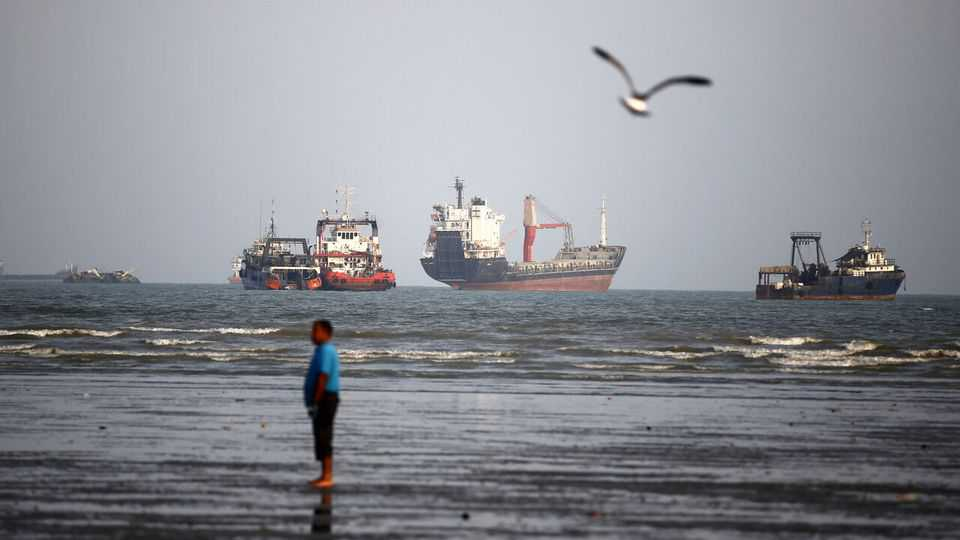

Politics

Oct 1st 2026
Donald Trump rejected a deal offered by Iran to reopen the Strait of Hormuz to commercial vessels within seven days and resume nuclear talks if America lifts its blockade of Iranian ports. He told aides he expected to begin bombing Iran again after the midterm elections in November. Mr Trump said America had “total control” of the strait and that “massive amounts of oil” were passing through it.
The last American and British troops left Iraq, ending their presence in the country since 2014, when they were sent as part of an international coalition to fight Islamic State, a jihadist group. The Iraqi prime minister said their departure heralded a shift to Iraq taking “full responsibility for its security and stability”.
A Flydubai flight from Dubai to Tel Aviv was diverted to Saudi Arabia when it plunged nearly 20,000 feet in less than two minutes and issued a distress signal, after a co-pilot stabbed the captain. Israel Katz, the Israeli defence minister, claimed that early evidence suggested the rogue pilot had intended to crash the plane, killing everyone on board, and called it an “attempted jihadist terror attack”. Passengers tackled the attacker, allowing other pilots to land the plane. Binyamin Netanyahu, the Israeli prime minister, described the Indian captain as a “true hero” for fighting back.
Fatima Zahra El Mansouri was appointed Morocco’s first female prime minister, after her liberal party won the most seats in a recent parliamentary election. King Mohammed VI chose Ms Mansouri, a former mayor of Marrakesh, over Fouzi Lekjaa, her party colleague and head of the football federation.
Aliko Dangote, Africa’s richest man, and William Ruto, Kenya’s president, broke ground on a $16bn refinery in Lamu on Kenya’s coast, which they hope will reduce fuel costs and import bills for refined products in east Africa. Abiy Ahmed, Ethiopia’s prime minister, Yoweri Museveni, Uganda’s president, and several other African leaders attended the ceremony. Mr Dangote already operates a big refinery in his native Nigeria.
Umaro Sissoco Embaló, the former president of Guinea-Bissau, who was ousted in a coup in November 2025, said he would return to the country to stand in presidential elections on December 6th. The announcement added fuel to suspicions that Mr Embaló orchestrated the coup, which happened just before the publication of results in an election he had been expected to lose.
The summit between Mr Trump and Xi Jinping produced no big breakthroughs, though China and America did agree to reduce tariffs on $30bn-worth of each other’s goods, not including soyabeans, and said they would set up a US-China Super-Intelligence Dialogue (China calls it an AI dialogue). This would include a mechanism for reporting AI incidents.
Britain’s MI5 intelligence service warned British academics that the China General Technology Research Institute in Beijing had strong ties to Chinese intelligence, and was funding research to aid China’s espionage operations. MI5 said academics were probably unaware of the links, but urged universities to cut their ties with the CGTRI, and said they could be in violation of national-security laws if they did not.
Malaysia began repatriating the first batch of 5,000 asylum-seekers to Myanmar under a plan that it has co-ordinated with the Burmese junta. Refugees from Myanmar’s Rohingya Muslim population have encountered a wave of hostility in Malaysia, facing forced evictions from villages and schools. There are thought to be 126,000 Rohingya in the country. The government insists the repatriations are voluntary, but UN personnel have been barred from screening them. It is unclear if any Rohingya were in the first batch of refugees to leave.
In Myanmar at least 50 people were reportedly killed by an air strike in the town of Kyauktaw, close to the border with Bangladesh. The strike was the latest offensive by Myanmar’s armed forces against the Arakan Army, a separatist group that has also committed atrocities against the Rohingya.
The death toll from flooding in Thailand rose to 23. Bangkok was inundated with 32cm (12.6 inches) of rain over three days, hampering operations at its main airport. The waters started to recede in the centre of the city, but outlying suburbs were expected to take longer to drain. More heavy rain is forecast for the capital soon.
Ukraine’s National Academy of Sciences in Kyiv was hit by a drone in another Russian barrage across the capital. At least two people were killed at the academy, which was formed in 1918 and co-ordinates research at Ukraine’s leading institutes.
Counter-terrorism police in Britain said that no explosive devices had been found in a van used by five men initially suspected of attempting to attack Fairford air base, where American bombers take off on sorties attacking military installations in Iran. The British government held an emergency COBRA security meeting after the five men were arrested, but, despite official suspicions of Iranian involvement, they were released on bail pending further investigation.
Andy Burnham, who took over as Britain’s prime minister in July, gave his big speech to the Labour Party conference in Liverpool. Enjoying a bounce in the polls, Mr Burnham delivered a message of “hope again” and said he wanted to draw a line under a decade of division. He pledged to tackle three thorny issues: state pensions, the voting system and Europe, though those reforms were pushed back to after the next general election, which is not due until 2029 (Mr Burnham did announce a national commission to study electoral reform). Labour’s opponents said his speech did nothing to tackle the problems Britain faces today.
In France Edouard Philippe, the leading centre-right candidate for president in next year’s election, outlined a pension-reform plan that would raise the minimum retirement age from nearly 63 to 65. Mr Philippe described the country’s comparatively low age of retirement as unsustainable, saying that without reform there was a risk of a financial crisis. New statistics showed that public debt has risen again, to 119% of GDP. France’s sovereign borrowing costs rose to their highest level since 2008. The government unveiled its budget for 2027, promising €54bn ($61bn) in savings. But it says the deficit will be 5% of GDP, well above the EU’s 3% cap.
The first woman to face execution in Tennessee for 200 years survived the procedure to kill her by lethal injection. Christa Pike was convicted in 1996 for murdering a classmate when she was 18. She was transferred to a medical facility after the botched execution. The prisons authority insisted that the proper protocols were followed and that she had been injected with two syringes of lethal-injection chemicals.
The candidates in Brazil’s presidential contest entered the final stage of campaigning before the election on October 4th. The left-wing incumbent, Luiz Inácio Lula da Silva, holds a slim lead over his conservative challenger, Flávio Bolsonaro, but that narrows to a statistical tie in the expected run-off election on October 25th.
Argentina’s president, Javier Milei, ranted on social media about the Falkland Islands, and threatened to take legal action against an Anglo-Israeli oil-exploration project in the area within two weeks unless it ceases operations. Mr Milei has described the project as a “clear and present danger” to Argentina. He recently rounded on the UN for not moving forward on Argentina’s claims of sovereignty over the British territory, describing the UN as “useless” and stuffed with “arrogant parasites masquerading as well-intentioned bureaucrats”.